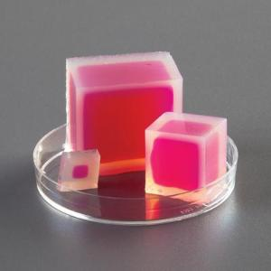
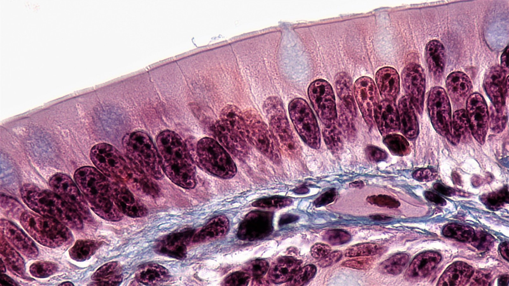
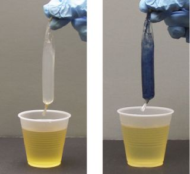

1.4 Surface Area, Water and Why Cells Are Small
Chapter 1.3 kept reaching for the same explanation — chewing, churning, emulsifying, villi, microvilli, all of them buying surface area. This chapter does the arithmetic behind that, and then spends it on the question the unit opened with: why a sachet of salt and sugar saves a child's life.
From 1.1: diffusion is the net movement of particles from where they are crowded to where they are not, driven by nothing but their own random motion. Osmosis is the same thing happening to water across a partially permeable membrane. Neither needs energy from the cell.
That chapter ended with a warning that becomes the centre of this one: cells cannot be bathed in pure water, because water would move in and burst them. Hold that thought — you are about to meet 1.5 litres of very carefully managed water in a large intestine.
By the end of this chapter you should be able to
- Calculate surface area, volume and their ratio for a cube, and explain why the ratio falls as size rises.
- Use that result to explain why cells are small and why absorbing surfaces are folded.
- Explain what an aquaporin is, what it carries, and — just as importantly — what it does not carry.
- Account for the movement of water in the gut, and explain why diarrhoea is dangerous and why oral rehydration salts work.
The agar cube result
Here is the experiment, and you can do it with jelly. Set agar with a pH indicator mixed through it, so the whole block is one colour. Cut it into cubes of different sizes. Drop them all into dilute sodium hydroxide at the same moment and leave them for the same length of time. Then cut each cube open.

That observation is the whole result, and it is worth stating baldly because it is the part students skip. Diffusion happens at the same rate everywhere. The dye did not know how big the cube was. It crossed the surface and moved inwards a fixed distance in a fixed time, exactly as it would into a wall of any size.
What changes with size is the proportion of the cube that distance is enough to reach — and that is a matter of geometry, not biology.
Do the arithmetic
A cube of side s has six square faces, so its surface area is 6s², and its volume is s³. The ratio of the two is therefore
surface area ÷ volume = 6s² ÷ s³ = 6 ÷ s
Read that result carefully, because it is startling. The ratio does not depend on the surface area or on the volume separately. It depends on nothing but the side length, and it is inversely proportional to it. Double the side and you exactly halve the ratio. Every time. For any cube, of any material, anywhere.
| Side (cm) | Surface area (cm²) | Volume (cm³) | Ratio | Volume reached in the lab |
|---|---|---|---|---|
| 1 | 6 | 1 | 6.00 | 100% |
| 2 | 24 | 8 | 3.00 | 87.5% |
| 3 | 54 | 27 | 2.00 | 70.4% |
| 4 | 96 | 64 | 1.50 | 57.8% |
| 6 | 216 | 216 | 1.00 | 42.1% |
| 8 | 384 | 512 | 0.75 | 33.0% |
The last column assumes the dye penetrates 0.5 cm from every face in the time allowed — so the untouched core is a cube of side s − 1, and the fraction reached is 1 − (s − 1)³ ÷ s³. Notice that the 8 cm cube has sixty-four times the volume of the 2 cm cube but only sixteen times the surface, and the dye reaches barely a third of it.
"Bigger things have more surface area, so bigger things exchange better." The first half is true and the second does not follow. A whale has vastly more skin than you do — and vastly more body per unit of skin. What decides whether an object can supply its own interior is not how much surface it has but how much surface it has per unit of volume that needs supplying. That is the ratio, and it always gets worse as things get bigger.
Run it yourself. Commit to a prediction first, then open the workbench and drag the slider.
Surface area to volume workbench
Interactive- Set the side to 1.0 cm. What percentage of the cube does the dye reach, and why is that number what it is?
- Compare the ratio at 2 cm and 4 cm, then at 3 cm and 6 cm. What is the rule, and does it depend on where you started?
- In the third stage, one big cube is cut into 27 small ones. The volume does not change at all. By what factor does the total surface area change, and where in your body is that same trick being used right now?
Two ways to live with the ratio
Every living thing has to get oxygen and nutrients into its interior and waste out of it, and the only free way to move anything is diffusion. So the falling ratio is a hard limit on how big something can be. There are exactly two ways round it.
One: stay small
That is what cells do. A typical animal cell is about 20 µm across — 0.02 mm — and a sphere that size has a surface-area-to-volume ratio of about 0.3 per micrometre. Grow the same cell to the size of a grape and the ratio collapses; the centre would be starved of oxygen long before any could diffuse to it.
This is the real answer to "why are cells so small?", and it is worth noticing what kind of answer it is. Cells are not small because they could not manage to be bigger. They are small because being small is the design. Building a large organism out of many tiny compartments, each with its own membrane, keeps the exchange surface enormous while the organism gets as big as it likes.
The exceptions prove it. An ostrich egg is a single cell and it is enormous — but almost all of that volume is stored yolk, which is not living, respiring cytoplasm. A nerve cell running from your spine to your toe is a metre long — but it is a thread a few micrometres wide, so its ratio is excellent. Both of them are large in a way that does not increase the distance from surface to centre.
Two: fold
That is what organs do. If you cannot reduce the volume, increase the surface — and the way to add surface without adding volume is to crumple it.
| Level of folding in the small intestine | Multiplies surface by | Running total (m²) |
|---|---|---|
| A smooth tube, 6 m long and 3 cm across (π × 0.03 × 6) | — | 0.57 |
| Circular folds of the whole wall | × 3 | 1.70 |
| Villi standing on the folds | × 10 | 16.96 |
| Microvilli on every villus cell | × 20 | 339.29 |
A bath towel becomes something larger than a tennis court, and the volume of the abdomen has not changed at all. The multipliers compound rather than adding, which is why three modest folds produce a six-hundred-fold effect.

Careful modern measurements of the human small intestine give a smaller figure than the classic textbook one — around 30 m² rather than 300 m², because the folds are not perfectly regular and the microvilli are not perfectly packed. Either number makes the same point, and it is worth knowing that a famous figure can be an estimate rather than a measurement. What is not in dispute is the mechanism: folding on three scales, each multiplying the last.
Once you have seen it, you will find the same move everywhere. Alveoli in a lung. Gill lamellae in a fish. Root hairs. The cristae inside a mitochondrion. The folded inner membrane of a chloroplast. Every one of them is a surface with something crossing it, and every one is crumpled.
A model worth being careful with
The classic classroom demonstration of a "membrane" is dialysis tubing — a bag of artificial membrane with starch solution inside, dropped into water with iodine in it. After a while the inside of the bag turns blue-black, showing that iodine got in; test the outside water for starch and there is none, showing that starch did not get out.

The demonstration works and the result is real. But the explanation usually offered for it is the one Chapter 1.1 spent a whole misconception box demolishing: that a membrane is a net with holes, letting small particles through and holding large ones back.
Two different mechanisms produce the same word, "selective", and it is worth being able to tell them apart.
Dialysis tubing selects by size. Physical holes; anything narrower than the hole goes through; the tubing is doing nothing, it is simply full of gaps.
A cell membrane selects by chemistry, and by which proteins it happens to have. Non-polar molecules dissolve through the oily core. Ions and polar molecules cannot, and cross only through a protein built for them — which means a cell can decide, minute by minute, what it will admit, by making more or fewer of that protein. A hole cannot be regulated. A protein can.
Water, aquaporins, and why diarrhoea kills
Now put the surface area and the membrane chemistry together on the problem that opened this unit.
Start with how much water is involved
You probably drink about two litres a day. But your own digestive system pours far more than that into your gut, and every drop of it has to be recovered.
| Fluid entering the gut each day | Volume (L) |
|---|---|
| What you drink | 2.0 |
| Saliva | 1.5 |
| Gastric juice | 2.0 |
| Bile | 0.5 |
| Pancreatic juice | 1.5 |
| Intestinal secretions | 1.5 |
| Total | 9.0 |
| Absorbed by the small intestine | 7.5 |
| Arriving at the large intestine | 1.5 |
| Reabsorbed by the large intestine | 1.4 |
| Lost in the faeces | 0.1 |
Your gut recovers about 98.9% of nine litres, every day, without you noticing. That is the real job of the large intestine, and it is why it is the last organ in the chain: whatever water is left after everything useful has been taken out still has to be got back.
How the water crosses
Water is a polar molecule, so it should not cross an oily membrane easily — and on its own it barely does. A little slips through, but nothing like fast enough to move 1.4 litres through a colon wall in a day. Cells that need to move a lot of water build a protein for it: an aquaporin.
An aquaporin is a channel protein with an hourglass-shaped pore, and the shape of that pore is the entire point. It is narrow enough that water molecules have to pass through in single file, and lined so that a water molecule is briefly turned upside down halfway along. Ions cannot get through — not even a hydrogen ion, which is smaller than a water molecule. The result is a channel that carries about three billion water molecules per second and essentially nothing else. Peter Agre shared the 2003 Nobel Prize in Chemistry for working out how it does that.
Several sets of teaching slides state that "aquaporins allow water and dissolved nutrients to pass directly into the bloodstream." That is wrong, and it is wrong in a way that destroys the only interesting thing about the protein.
Aquaporins are water-selective. Their selectivity is not a detail — it is what they are for and what the Nobel Prize was awarded for. A channel that let glucose and amino acids through would also let ions through, and a cell that let ions leak freely across its membrane would be unable to hold any gradient at all, which is to say it would be dead.
Glucose and amino acids cross the intestinal wall through their own transport proteins. Glucose uses SGLT1, which carries one glucose molecule together with two sodium ions. Remember that name — the next section turns on it.
Why the water follows the salt
Aquaporins are open channels, so water moves through them by osmosis and nothing else. It goes wherever the solute concentration is higher. That means the cell lining your gut has a simple way of pulling water out of the gut contents: move salt out of the gut first, and the water follows on its own.
This is exactly Chapter 1.1's tonicity, running in a real organ. Sodium is actively pumped from the epithelial cell into the space behind it. That makes the fluid behind the cells hypertonic to the gut contents. Water then moves down its own gradient — out of the lumen, through the aquaporins, into the blood. No pump ever touches the water.
Cholera, and the sachet
Now the case the unit opened with. Vibrio cholerae is a bacterium that does not invade your cells or destroy your gut lining. It releases a toxin that locks one particular chloride channel in the open position. Chloride ions pour out of the epithelial cells into the lumen, sodium follows the charge, and then water follows the salt — through the aquaporins, in the wrong direction.
The result is that the gut, whose entire job is recovering nine litres a day, starts secreting instead. A severe case can lose 10 to 20 litres of fluid in a day — a hundred to two hundred times the normal loss. Death can follow within hours, and it is not from the infection. It is from dehydration.
So: how do you put nine litres a day back into a child, without a drip, a needle or a nurse?
You cannot simply give them water. Pure water in the gut has no solute to follow, so very little of it is absorbed — and, as Chapter 1.1 warned, a large volume of pure water entering the blood is dangerous in its own right. Salt water alone does not work well either: the cholera toxin has disabled the ordinary sodium route.
The answer is SGLT1, the glucose transporter from the last section, and it is the reason the sugar is in the sachet. SGLT1 is untouched by cholera toxin, and it will only work when it has both of its passengers at once — it carries glucose and sodium together or not at all. Supply both in the same drink and SGLT1 pulls sodium across the wall. The sodium raises the concentration behind the cells. Water follows through the aquaporins. The gut starts absorbing again while the infection is still raging.
Oral rehydration salts work because one transport protein needs two passengers. Take the glucose out and the sodium stays in the gut; take the sodium out and the glucose is absorbed but no water follows. Together, at roughly equal concentrations, they restart the recovery of water in a gut that has stopped recovering it.
The whole treatment costs a few cents, needs no equipment, and can be given by a parent. It has saved somewhere in the region of fifty million lives. It works because of the shape of two proteins in one membrane — which is as good an argument as biology offers for learning what proteins in membranes actually do.
Where this goes next
Notice what just happened in that last explanation. Water crossed a gut wall — but only because salt had been moved by a transporter, which needed sugar that had been produced by the digestive system, and it all ended up in the blood, which belongs to a completely different organ system, and was then handled by the kidney, which belongs to a third.
Not one sentence of the cholera story stayed inside the digestive system. Chapter 1.5 makes that explicit: it takes five things that leave or enter the gut and follows each one across the body, and by the end you will have used seven other organ systems to explain one meal.
Check your understanding
A student says "cells are small because they have not evolved to be bigger yet." Correct them properly, using the cube result.
Being small is not a limitation cells are stuck with — it is what makes them work. Everything a cell needs has to enter across its surface and everything it makes has to leave the same way, and the free way to do that is diffusion. The volume that needs supplying grows with the cube of the cell's size, while the surface available to supply it grows only with the square. For a sphere the ratio is 3 ÷ radius, so it falls steadily as the cell grows.
Scale a 20 µm cell up to a centimetre across and two things happen at once: the surface per unit of volume collapses, and the distance from the membrane to the centre becomes so great that diffusion — which is slow over long distances — could not resupply the middle in any useful time. The cell would starve from the inside.
The evidence that this is the real constraint is that large organisms are not built from large cells. An elephant's cells are the same size as a mouse's; there are simply vastly more of them. That is exactly what you would expect if the limit were geometric rather than evolutionary.
Explain why the "net with holes" picture is a good model of dialysis tubing and a bad model of a cell membrane. Give one piece of evidence that decides it.
Dialysis tubing really is a size filter. It is an artificial sheet with physical pores of a fixed diameter, so what crosses is decided by whether a molecule is narrower than a hole. Iodine molecules fit; starch molecules do not; nothing about the chemistry is involved.
A cell membrane does not work that way. It is a sheet of phospholipids with an oily core, and the deciding factor is whether a substance will dissolve in oil — or, failing that, whether the cell has a protein that will carry it.
The decisive evidence is a comparison where size and behaviour point in opposite directions. A sodium ion is considerably smaller than a carbon dioxide molecule. Carbon dioxide crosses a membrane freely; sodium cannot cross at all without a protein. If size were the deciding factor, that result would be impossible. Chemistry explains it immediately: CO₂ is non-polar and dissolves in the core, while Na⁺ carries a charge and will not enter an oily environment at any size.
A first-aid guide says that someone with severe diarrhoea should "drink plenty of water." Explain why oral rehydration salts are substantially better, in terms of what crosses the gut wall and how.
Water crosses the gut wall by osmosis, through aquaporins. Osmosis has a direction only when there is a difference in solute concentration, so water on its own has very little reason to leave the gut — most of it passes straight through and is lost. Drinking plain water also dilutes the blood, which brings its own dangers.
Oral rehydration salts supply sodium and glucose together, in roughly equal concentrations. That combination is what the transport protein SGLT1 requires: it carries glucose and sodium across the epithelial cell membrane together, and will not carry either one alone. Once sodium has been moved out of the gut, the fluid behind the epithelial cells becomes more concentrated than the gut contents, and water follows it through the aquaporins by osmosis.
The crucial detail is that SGLT1 is not affected by cholera toxin, which disables a different route. So the sugar-and-salt drink opens a path for absorption that is still working, while the damaged path continues to leak. That is why the composition of the sachet matters and why leaving the glucose out makes it stop working.
Quick check
These mark themselves, and point you back to the right section when an answer goes wrong.
Three agar cubes of different sizes sit in dye for the same time. Cut open, all three show a pink shell of the same thickness. What does that tell you?
This is the part students skip, and it is the whole result. Diffusion is not a property of the object — it happens at the same rate everywhere. The proportion of the cube that distance is enough to supply is pure geometry.
A 2 cm cube and a 4 cm cube come out of the dye at the same moment. The 4 cm cube is left with a far larger pale core. What is the reason?
The arithmetic is worth doing once. With 0.5 cm reached from every face, the untouched core of a cube of side s is a cube of side s − 1 — so the 2 cm cube is 87.5% supplied and the 4 cm cube only 57.8%, on identical diffusion.
A whale has vastly more skin than you do. Why does that not mean a whale exchanges materials more easily across its surface?
What decides whether an object can supply its own interior is not how much surface it has, but how much surface it has per unit of volume that needs supplying. For a cube that ratio is 6 ÷ side: double the side and you exactly halve it, every time.
A single 3 cm cube is cut into twenty-seven 1 cm cubes. What has changed?
This is the same arithmetic as the whale, run backwards. Subdividing is the only way to raise surface without losing volume, and it is what a body built from millions of tiny cells is doing — and what villi and microvilli do to a tube that cannot get any longer.
An elephant's cells are the same size as a mouse's; there are simply far more of them. Why is that a useful piece of evidence?
If size were an evolutionary accident you would expect big animals to have big cells. They do not — and that is precisely what you would predict if the constraint were the falling surface-to-volume ratio. Building a large organism out of many tiny compartments keeps the exchange surface enormous.
A nerve cell runs a metre from your spine to your toe. Why is that not a counter-example to the claim that cells have to stay small?
The constraint was never on a cell’s total volume. It is on the distance from the surface to the furthest point inside, and a thread can be as long as it likes without lengthening that distance.
Dialysis tubing lets iodine through and holds starch back. A picture of balls approaching a net explains it well. Why is that same picture a bad model of a cell membrane?
Two mechanisms, one word. Dialysis tubing genuinely is a size filter — physical pores of a fixed diameter, doing nothing. A membrane is an oily sheet whose crossings are decided by solubility and by which proteins the cell has made. And a cell can change how many of a protein it has. A hole cannot be regulated.
A cell can change what it will admit from one hour to the next. Dialysis tubing cannot. What is the difference?
Figure 1.17 shows what that control buys: the same stretch of wall with more or fewer channels behaves completely differently. A barrier made of holes is stuck with whatever it was manufactured as; a barrier made of proteins is a decision the cell takes again every day.
A revision sheet says aquaporins "allow water and dissolved nutrients to pass directly into the bloodstream." What is wrong with that?
The selectivity is not a detail — it is what the protein is for, and what the 2003 Nobel Prize was awarded for. The pore is narrow enough that water passes in single file and not even a hydrogen ion gets through. Glucose has its own transporter, SGLT1, and that difference is what the next section turns on.
A hydrogen ion is smaller than a water molecule, so a student expects it to slip through an aquaporin easily. Why does it not?
This is the same lesson as Figure 1.15, one scale further in: a channel is no more a sieve than a membrane is. About three billion water molecules a second go through, and essentially nothing else — which is the achievement the 2003 Nobel Prize recognised.
Oral rehydration salts contain both sugar and salt. Why would leaving the sugar out stop them working?
The whole treatment rests on one transport protein needing two passengers. Sodium moved out of the lumen makes the fluid behind the cells hypertonic; water then follows by osmosis through the aquaporins. SGLT1 is untouched by cholera toxin, so the sachet opens a route that is still working while the damaged one keeps leaking.
Suppose the salt were left out of the sachet instead, and a child with cholera were given sugar solution alone. What would happen?
Either half of the sachet fails on its own, and for two different reasons — one leaves the transporter idle, the other leaves it working while nothing useful follows. It is the sodium arriving behind the cells that does the osmotic work; the sugar is only how the sodium gets there.